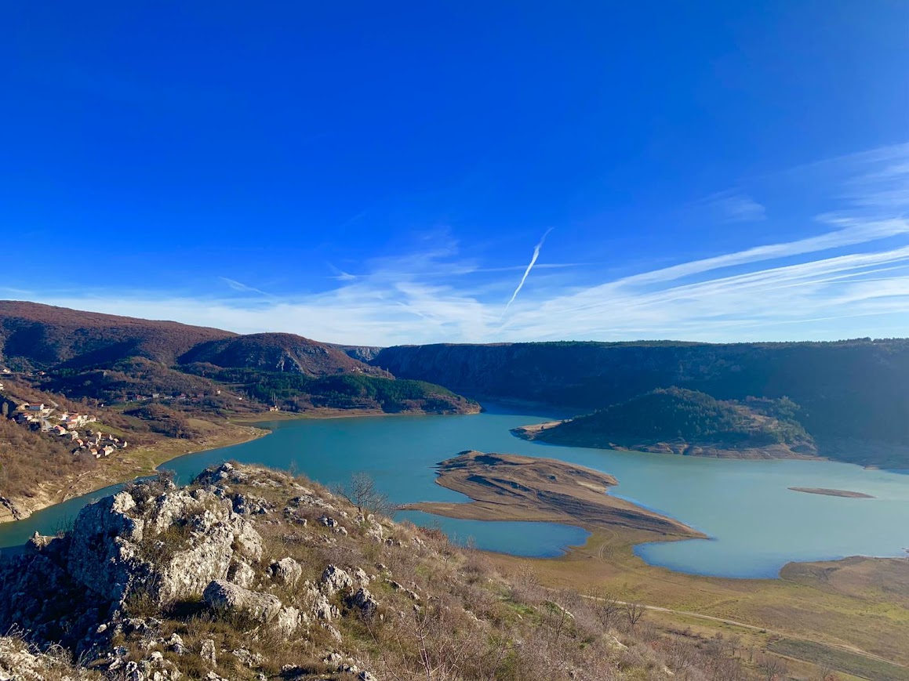
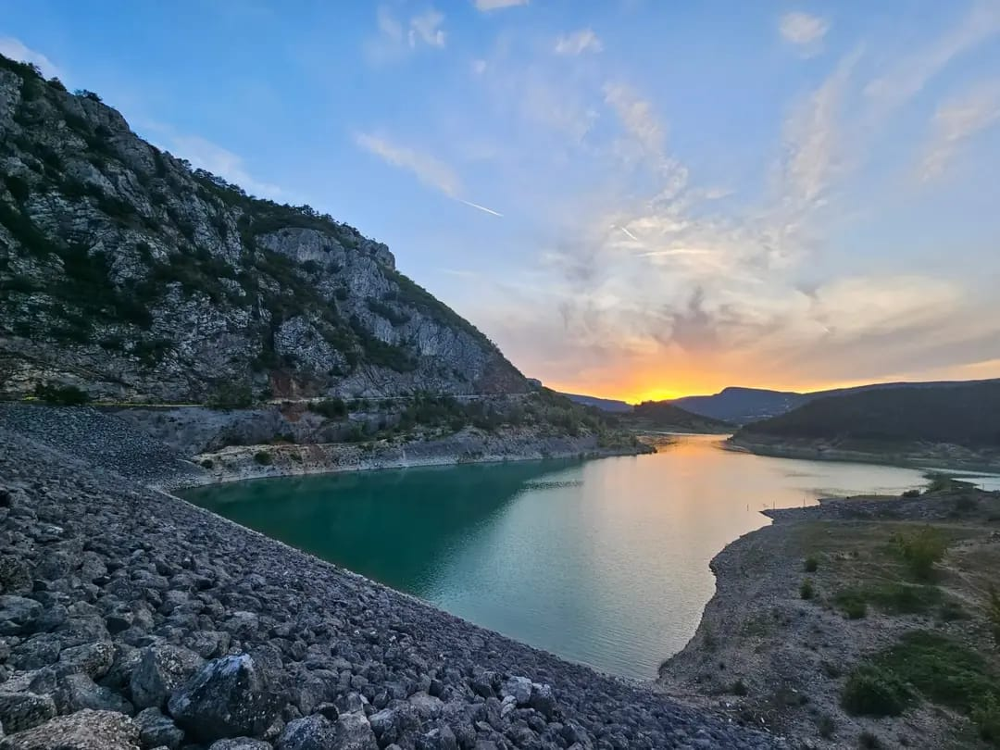
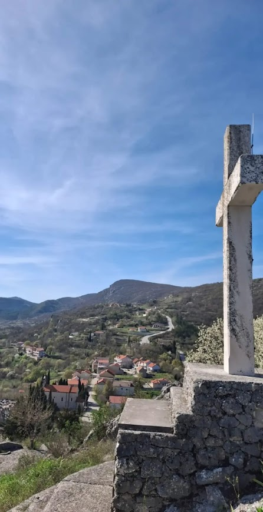
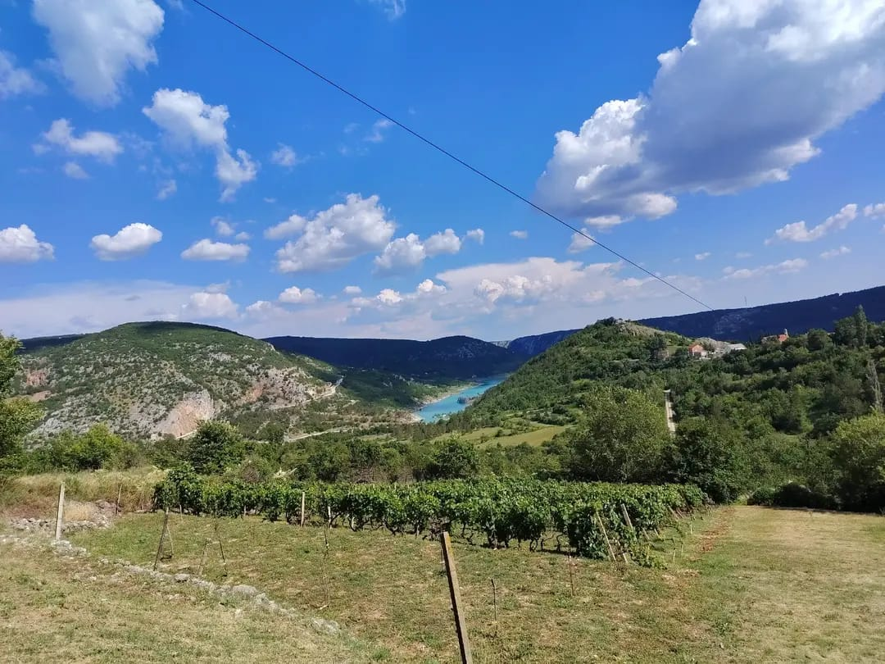
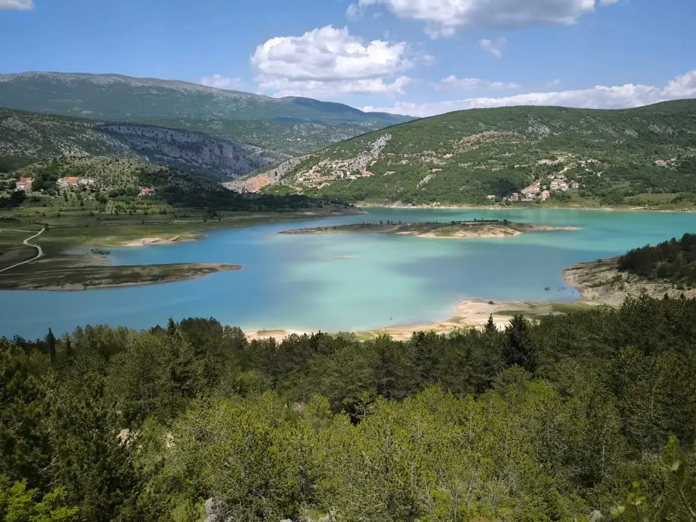

Migracije i rasprostranjenost roda Tandara
Uvod
Povijest svakoga roda ne čine samo njegovi najstariji zapisi i obiteljska stabla nego i putovi kojima su se njegovi članovi tijekom vremena kretali. Rod Tandara nije ostao vezan isključivo uz svoje izvorno područje. Društvene, gospodarske i političke okolnosti tijekom posljednja tri stoljeća potaknule su postupno širenje obitelji iz matičnog zavičaja prema drugim krajevima Hrvatske, Bosne i Hercegovine, Europe te prekooceanskim državama.
Danas se prezime Tandara susreće na više kontinenata, ali unatoč zemljopisnoj raspršenosti njegovi korijeni ostaju povezani s Imotskom krajinom i selom Ričice.
Ričice – ishodište roda
Najstarije pouzdano poznato središte roda jesu Ričice u Imotskoj krajini. Upravo se ovdje tijekom prve polovice 18. stoljeća može pratiti razvoj obitelji iz koje su nastale kasnije grane roda.
Ričice su tijekom stoljeća bile više od mjesta stanovanja. One predstavljaju ishodišnu točku iz koje su se pojedini članovi obitelji postupno raseljavali prema okolnim područjima, zadržavajući svijest o zajedničkom podrijetlu.
Ričice kroz godišnja doba i različite perspektive









Širenje unutar Imotske krajine
Tijekom 18. i 19. stoljeća broj članova roda postupno se povećavao. Kako su nastajala nova kućanstva, dio obitelji selio se u obližnja mjesta, tražeći obradivo zemljište, mogućnost osnivanja vlastitoga doma ili bolje gospodarske uvjete.
Takve migracije bile su uobičajene za gotovo sve obitelji Imotske krajine i predstavljale su prirodan nastavak demografskog razvoja.
Širenje prema Zavelimu, Tomislavgradu i Livnu
Prvo pouzdano širenje prezimena Tandara izvan Ričica povezano je s područjem Zavelima, prostranim krajem koji obuhvaća desetak sela. Među njima se nalazi i selo Tandara, nazvano po prvim doseljenicima iz Ričica – pripadnicima roda Tandara.
Između 1806. i 1819. godine započela je izgradnja prvih kuća na tom prostoru te postupno preseljenje dviju obitelji iz Ričica. Prema obiteljskom predanju i dosadašnjim istraživanjima, radilo se o obitelji Ante Antina, začetnika Lovrine, a kasnije i Križanove grane, te o obitelji Martina Petrova, začetnika Tomine grane i loze Tromića. Njihovim dolaskom oblikuje se zavelimska grana roda Tandara, izravni nastavak izvorne ričičke loze.
Zavelimska grana imala je ključnu ulogu u očuvanju prezimena, obiteljskog identiteta i trajne povezanosti s ričičkim korijenima. Doseljenjem ovih obitelji stvorena je nova životna jezgra roda iz koje su se kasnije razvile dodatne obiteljske linije.
Drugo širenje roda Tandara najvjerojatnije je vodilo prema području Tomislavgrada. Iz tog su se prostora pojedine obitelji preselile u Livno, gdje i danas žive njihovi potomci. O livanjskim Tandarama bit će obrađeno posebno poglavlje pod nazivom Livanjske Tandare.
Iseljavanje u Europu
Druga polovica 20. stoljeća donijela je novi val migracija. Gospodarske prilike dovele su do odlaska brojnih obitelji na privremeni ili trajni rad u zapadnoeuropske države.
Najviše iseljenika nastanilo se u:
- Njemačkoj
- Austriji
- Švicarskoj
- Ujedinjenom Kraljevstvu
Premda su ondje stvarali nove domove, većina je zadržala snažnu povezanost s rodnim krajem, redovito posjećujući Ričice i održavajući obiteljske veze.
Prekomorske migracije
Pojedini članovi roda tijekom 20. stoljeća iselili su i u prekooceanske zemlje. Najčešća odredišta bila su:
- Sjedinjene Američke Države
- Kanada
- Australija
U novim sredinama obitelji su nastavile njegovati hrvatski identitet, običaje i svijest o vlastitom podrijetlu.
Rasprostranjenost prezimena danas
Danas prezime Tandara nalazimo u Hrvatskoj, Bosni i Hercegovini te među hrvatskim iseljeništvom u više europskih i prekomorskih država.
Iako broj nositelja prezimena nije velik, njegova zemljopisna rasprostranjenost svjedoči o dugotrajnom procesu migracija koji traje već više od dvjesto godina.
Zahvaljujući suvremenim komunikacijama i digitalnim obiteljskim projektima moguće je ponovno povezati članove roda bez obzira na udaljenost.
Očuvanje zajedničkog identiteta
Jedna od posebnosti roda Tandara jest činjenica da je, unatoč brojnim migracijama, sačuvana svijest o zajedničkom podrijetlu. Obiteljski susreti, zajednička istraživanja rodoslovlja, razmjena fotografija i dokumenata te održavanje međusobnih kontakata pridonose očuvanju identiteta roda i među mlađim naraštajima.
Pogled u budućnost
Migracije nisu završeno poglavlje obiteljske povijesti. Svaka nova generacija nastavlja pisati vlastiti dio priče, bilo da ostaje u zavičaju ili život gradi u nekoj drugoj zemlji. Digitalni obiteljski arhiv omogućuje da svi ti putovi ostanu povezani s njihovim zajedničkim ishodištem.
Zaključak
Povijest roda Tandara nije ograničena samo na jedno selo ili jednu državu. Tijekom više od tri stoljeća obitelj se postupno širila prema drugim krajevima Hrvatske, Bosni i Hercegovine, europskim državama i prekooceanskim zemljama.
Unatoč toj zemljopisnoj raspršenosti, zajedničko podrijetlo i obiteljska povezanost ostali su važan dio identiteta roda. Upravo zato istraživanje migracija nije samo pregled preseljenja nego i svjedočanstvo o trajnosti obiteljskih veza kroz vrijeme.